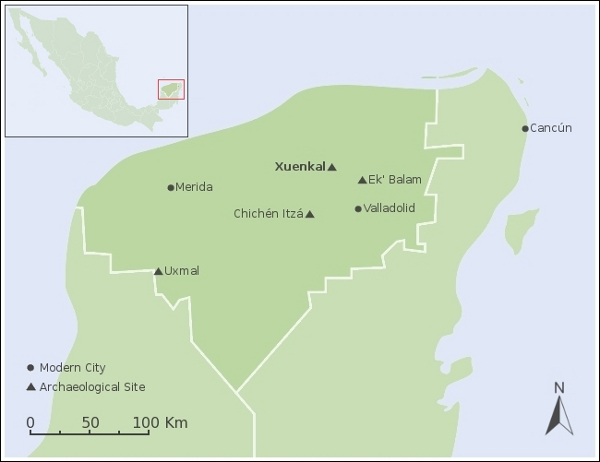
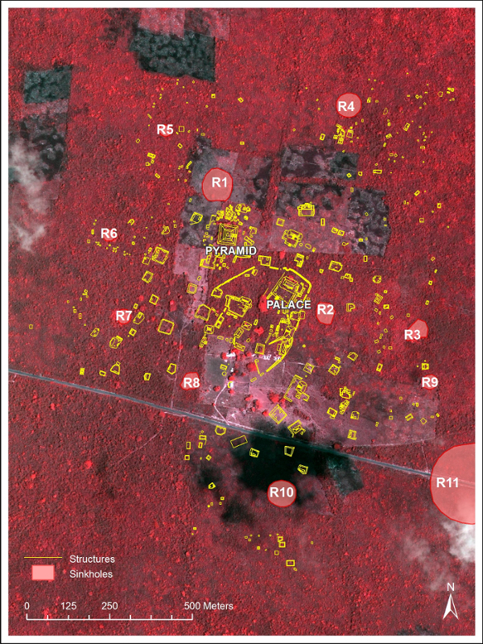
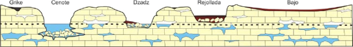
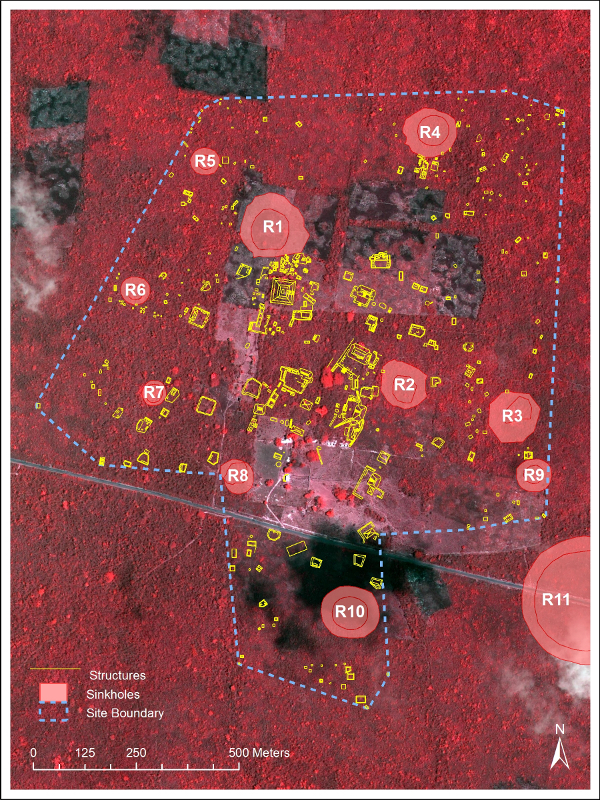
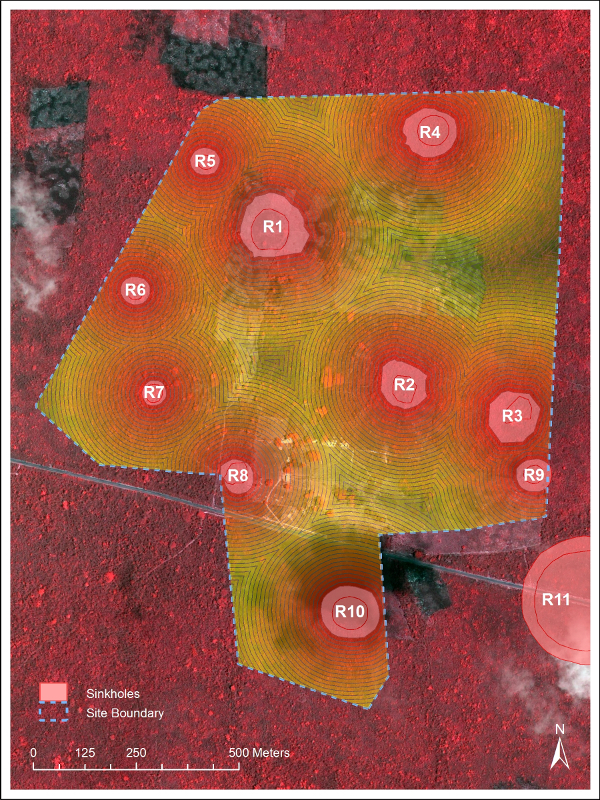
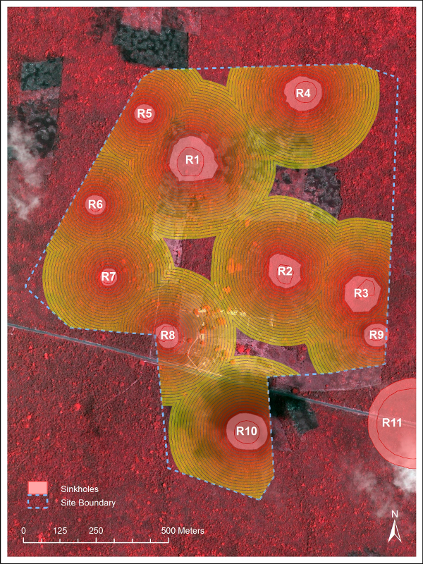
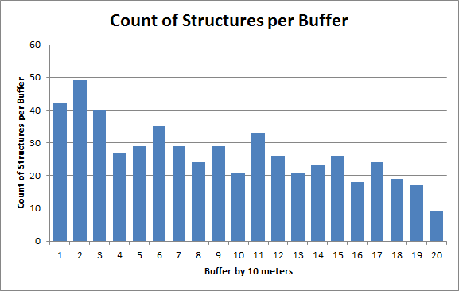
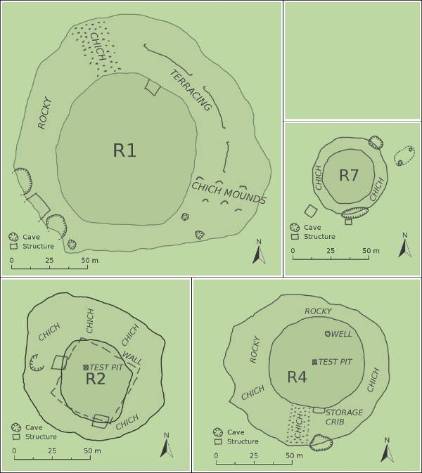
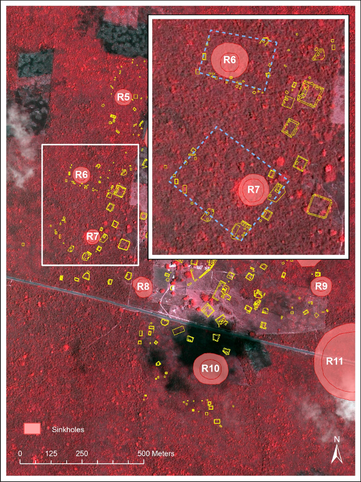
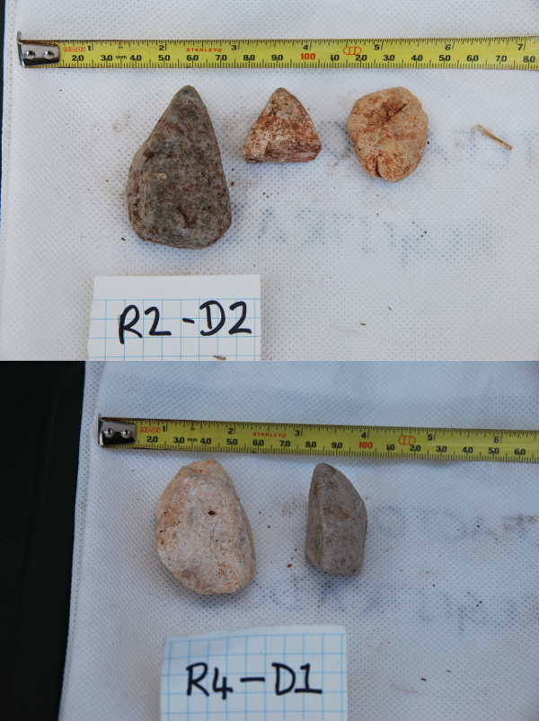

Spatial Analysis of Ancient Maya Settlement near Karst Sinkholes at Xuenkal, Yucatán, Mexico.
A thesis submitted to the Kent State University Honors College in partial fulfillment of the requirements for University Honors
by Peter Koby
May 2011
I. Introduction and Background — II. Literature Review — III. Methodology — IV. Results — V. Discussion — VI. Conclusion
Chapter 1: Introduction and Background
Introduction
The purpose of this research is to better understand Maya settlement patterns in relation to the local geomorphology of the Yucatán Peninsula of Mexico, specifically sinkholes. The dry-bottomed sinkholes in this region are typically round and steep-sided with thick soils, and are particularly common on the nearly flat limestone-dominated lowlands of the northern Yucatán Peninsula (Munro-Stasiuk, Manahan, and Stockton forthcoming) (see figure 1.1 for location). Sinkholes in this region tend to be about thirty to 300 m. across, and about eight m. deep on average. Previous research has suggested significant clustering of structures around sinkholes (Houck 2006; Munro-Stasiuk, Manahan, Stockton forthcoming). To date, however, no one has examined this relationship quantitatively. The purpose of this research is, therefore, to apply GIS technologies and statistical analysis to examine quantitatively whether there indeed exists such a clustering relationship using the specific example of the site of Xuenkal, Yucatán, Mexico, a site known to contain several sinkholes (figure 1.2).
Figure 1.1: Map of the Yucatán Peninsula showing the location of Xuenkal relative to other sites and cities in the region.
Figure 1.2: False color map of the study area of Xuenkal, showing locations of structures and sinkholes (R1–R11).
Based on initial observations by other researchers at Xuenkal (e.g. Dr. Kam Manahan, Dr. Mandy Munro-Stasiuk), it appears that residential structures were preferentially located near sinkholes and were commonly organized near the lips of the sinkholes. If there is a preference of construction, sinkholes were probably important to Maya culture, whether for agriculture, resource extraction (building materials, limestone for plaster production), or perhaps to build on bedrock to avoid topsoils better suited for agriculture. This research will attempt to quantitatively determine the residential structure-to-sinkhole relationship and subsequently discuss the possibilities of cultural significance underlying this conclusion.
Background
Sinkholes are common in regions of relatively young karst and reflect normal karst processes. The geology of the Yucatán region is particularly susceptible to sinkhole formation. Marine carbonate deposits were formed during the Cretaceous (145–65 MYA) and Tertiary (65–2.6 MYA) periods, and they emerged from the ocean by the beginning of the Quaternary period (2.6 MYA) (Cabadas-Báez et al. 2010). Because limestone slowly dissolves when in contact with water, flowing water can exploit cracks in the bedrock and create fissures which may ultimately expand into underground cavities through the process of chemical weathering and erosion. Over the last few million years, the roofs of some of these cavities have collapsed to form depressions (sinkholes) in the ground surface. The porosity of the limestone in the Yucatán Peninsula permits easy flow of water underground, so there are no rivers or streams and few lakes in the region. Collapse sinkholes of varying depths are however prominent. Karst processes formed both the Northern Lowlands and the hillier Southern Lowlands (Munro-Stasiuk, Manahan, and Stockton forthcoming). The Ticul Fault separates these two regions, cutting across the peninsula from WNW to ESE (Munro-Stasiuk, Manahan, and Stockton forthcoming). The Northern Lowlands also contain the Chicxulub Crater which was caused by an asteroid impact which caused the last great extinction event 65 MYA (Munro-Stasiuk, Manahan, and Stockton forthcoming). The impact of the asteroid resulted in the presence of a major depression crater which caused much of the overlying limestone bedrock to fracture when the peninsula emerged from the ocean. The exploitation of this fracturing enhanced the development of karst terrain, especially sinkholes (Munro-Stasiuk, Manahan, and Stockton forthcoming).
On the northern Yucatán Peninsula, sinkholes have been classified by the indigenous Maya populations into three categories based on the presence of water. These categories are cenotes, dzadzob, and rejolladas (Houck 2006) (figure 1.3). Cenotes are sinkholes which descend below the water table and are fed by groundwater and contain standing water. Dzadzob are intermittently filled with standing water and are often swampy. Rejolladas are sinkholes that do not descend to the water table, and are consistently dry, except during periods of precipitation. The site of Xuenkal is set in a region with a higher than average concentration of rejolladas (Munro-Stasiuk, Manahan, and Stockton forthcoming). Previous research on rejolladas has suggested that they were used for agriculture because of their relatively higher soil moisture and cooler temperatures compared to the surface (Houck 2006; Munro-Stasiuk and Manahan 2010), and that their presence may have driven overall settlement patterns on the northern Yucatán Peninsula (Munro-Stasiuk and Manahan 2010; Ringle and Bey 2008).
Figure 1.3: Diagram illustrating the types of sinkholes common in the Yucatán region.
Soils in the study region are made primarily of thin dark organic soils containing large amounts of limestone pebbles, and thicker red soils (locally known as k’ancab) which dominate the bottoms of sinkholes (Munro-Stasiuk, Manahan, and Stockton forthcoming). Carbonate waters (from solution of limestone) tend to leach carbonate and silicate minerals from soils which then become preferentially enriched in other minerals (Munro-Stasiuk, Manahan, and Stockton forthcoming).
The climate of the northern Yucatán Peninsula is classified as Aw (tropical savanna) in the Köppen scheme. The mean temperature is 26° C, and annual precipitation is about 1100 mm per year (Munro-Stasiuk, Manahan, and Stockton forthcoming). Precipitation is focused between July and October.
Research Problem and Hypotheses
This research specifically examines the archaeological site of Xuenkal, north-central Yucatán State, and adds to the research already completed by the Proyecto Arqueologico Xuenkal (PAX) which was initiated in 2004 (Ardren et al. 2007). The study area of Xuenkal is located in the northern Yucatán Peninsula, Mexico, approximately eight kilometers west of Espita, 40 km north-west of Valladolid, and 41 km north-east of Chichén Itzá (Munro-Stasiuk, Manahan and Stockton forthcoming) (figure 1.1). The PAX project, the only comprehensive archaeological project on the site, has investigated Xuenkal through survey, mapping, archaeological excavation, and documentation of vegetation. It has been determined that Xuenkal experienced a long occupation from the Late Preclassic to Terminal Classic periods (~400 BC to ~AD 1000) (Ardren et al. 2007).
It is understood that a conclusive result cannot be determined given the parameters of this study and the current body of evidence. Such a limitation does not, however, preclude the examination of various hypotheses to explain the evidence at hand. The primary hypothesis under examination is that structures (dwellings, field houses, walls, etc.) were preferentially located near the lips of sinkholes.
Chapter 2: Literature Review
The greater Yucatán Peninsula has been researched from both an archaeological and a geographical standpoint. While only a few papers have been published regarding the site of Xuenkal itself (as it has only recently been excavated), many other regional sites have been discussed from both environmental and archaeological standpoints. As a foundation for this research, this chapter will discuss the use of Geographic Information Systems (GIS) in archaeology, examining general uses of the technology as well as focusing on specific uses in the region. Sinkholes will also be discussed, specifically in the northern Yucatán Peninsula. Finally, literature about the site of Xuenkal will be reviewed, focusing predominantly on the aspects relating to the use of sinkholes at the site.
GIS in Archeology
GIS in archaeology is relatively underutilized; however, in the last few years, it has experienced an expansion of use in fields other than geography, and, in archaeology, it is becoming especially popular. GIS has a place in archaeology as well as geography largely because both disciplines focus on the concept of space (Wheatley and Gillings 2002). Archaeology has long used spatial technologies through various means, such as site mapping, three-dimensional excavation documentation, and distribution analysis. Until recently, these technologies have been largely static, with little change in techniques (predominantly paper mapping). GIS provides a unique means to look at spatial distributions, focusing more on just the absolute locations of objects (Wheatley and Gillings 2002). It allows for a better conglomeration of the spatial attributes of data with the information about objects (age, type, arrangement, etc.). Other factors such as environmental and cultural aspects may be combined with the spatial data using GIS to produce a better holistic view of the dataset (Wheatley and Gillings 2002). With the rise of cultural resource management (CRM) in North America over the last few decades, GIS has seen a rise in archaeological utilities (Wheatley and Gillings 2002). This increase in interest by archaeologists and CRM professionals has allowed GIS to become a staple technique in archaeology (Wheatley and Gillings 2002).
There are several GIS techniques that have been used in archaeology. Commonly, many projects simply use GIS to map the presence of archaeological structures or features (e.g. Fedick 1994; Kepecs and Boucher 1996; Wheatley and Gillings 2002; Winemiller and Ochoa-Winemiller 2006; Ullah 2010; Tavassoli, Abtin, and Naeeni 2012). However, in addition to simple mapping studies, many researches have developed higher order GIS spatial analysis techniques to help understand and interpret landscape and settlement patterns. Common applications include prediction studies and visibility analysis (Wheatley 2004). Predictive modeling studies take many variables into account and attempt to map (in this case) the probable location of settlements (McCoy and Ladefoged 2009; e.g. Fedick 1994; Winemiller and Ochoa-Winemiller 2006; Ford, Clarke, and Raines 2009). Visibility analysis is the study of how past settlement communities would have used lines of sight and fields of view (viewsheds) in the formation of settlement (McCoy and Ladefoged 2009; e.g. Lake and Woodman 2003; Jones 2006; Ogburn 2006).
Also notable for the purposes of this study is work done in the Bampur Valley in Iran using buffer analyses (Tavassoli, Abtin, and Naeeni 2012). Buffers were drawn around the river valley to determine where settlement might occur based on flooding patterns (Tavassoli, Abtin, and Naeeni 2012). The analysis indicates that within 100 m of the river valley, no settlement would have occurred, but past 100 m, settlement focuses closer to the river (Tavassoli, Abtin, and Naeeni 2012).
Predictive Modeling
Fedick analyzed the terrain of the Belize River valley and surrounding hilly areas and used GIS to determine likely positions of agricultural terracing (1994). This analysis was performed using two major metrics: slope and aspect, and soil type. A Triangulated Irregular Network (TIN) was generated of the study area, with triangles differing from neighboring triangles in slope, aspect, or both.
Winemiller and Ochoa-Winemiller studied the potential of using GIS technologies in archaeological studies in the Maya Yucatán region (2006). Their study area focused on the region surrounding Chichén Itzá and used maps (from 1843 to 1999) of the area. Their work involved collecting various site maps, including remote sensing data, and non-spatial data into a Database Management System (DBMS) and subsequently surveying some of these sites to determine the accuracy of this database. Of the sites surveyed, only one was not evident in mapping. Their results showed that there are large regions devoid of settlement. Further analysis showed that settlements cluster around sources of water with a maximum distance from a source of water of about 500 m.
Ford, Clarke, and Raines (2009) published research on the use of statistical analysis of geographical features to effectively predict the distribution of Maya settlements in the greater Petén region. The authors calculated different weighted variables which could predict undiscovered sites. The initial test of their variables (including soil fertility and drainage, proximity to water sources, and topography) was conducted upon the known settlement of El Pilar. The test was able to correctly predict 75 percent of the sites. The test was then expanded to include the whole Petén region, predicting sites that had not yet been discovered. Upon surveying the region, the researchers found that 82 percent of settlements discovered lay in the high probability areas.
Visibility Analysis
Lake and Woodman (2003) discuss and critique the use of GIS in the analysis of visibility in archaeology. One problem previously associated with visibility analysis was the level of interpretation necessary when mapping visibility by hand. With the rise of GIS in archaeology, accuracy of viewsheds has increased, but still must rely on the level of detail in the digital elevation maps used. Following the mapping of visibility, there remains the issue of how to interpret the coverage thus provided. Knowing the visibility from a point or feature is only useful if the location of the feature can be justified or explained.
Jones (2006) used viewshed analysis to investigate the reasons for settlement by the prehistoric Onondaga Iroquois in New York. Viewsheds were created for 13 sites in this region, many of which were contemporary. Analysis indicated that the field of view of many of these sites was seriously limited, and would have poor implications for defensibility. However, analysis of line-of-sight between sites showed that seven contemporary sites were visible to each other. This result has implications of a broader form of defensibility, where neighboring sites would be able to see and communicate with each other in times of duress. The results of the field of view analysis suggest that agricultural viability of a site probably took precedence over early visibility of danger.
Ogburn (2006) provides an interesting look at the actual visibility of features taking into account variables such as atmospheric extinction, contrast, and recognition. He proposes a few models to modify the current use of viewsheds: one is a modification of a method developed in Japan, using three levels of visibility (in this case, of trees), based on distance; another is the creation of “fuzzy viewsheds”, which takes into account the distance from an object and modifies the default viewshed; and modified fuzzy viewsheds, which takes into account the exact size of the object being viewed (and from which point the viewshed is measured). The latter is extremely useful in determining how visible a feature would have been to ancient settlements.
Sinkholes
Sinkholes are not extensively discussed in the literature, but there are salient articles discussing them from different standpoints. They have been most discussed as potential for agricultural use by the ancient Maya (Gómez-Pompa, Flores, and Fernández 1990; Kepecs and Boucher 1996; Houck 2006; Munro-Stasiuk, Manahan, and Stockton forthcoming).
Gómez-Pompa, Flores, and Fernández (1990) outline the viability of cultivating cacao in the relatively dry climate of northern Yucatán by utilizing sinkholes as moist microclimates. Cacao grown in similar latitudes require year-round precipitation and humidity, whereas the climate of the northern Yucatán is generally dry and hot with a distinct rainy season (Munro-Stasiuk and Manahan 2010). The authors suggest that the proper climate for growing cacao in this region exists only in sinkholes. Unclear, however, is how the species of cacao that grows in this area, Theobroma cacao L., would have migrated from its origin in South Central America. The Maya then cultivated cacao so that some local groves remained. Gómez-Pompa, Flores, and Fernández (1990) discovered some wild-growing plants of cacao in sinkholes near Valladolid, although it is unclear whether these are wild species or human-cultivated and remnant in this region.
Fedick (1994) and Kepecs and Boucher (1996) discuss the specific use of sinkholes for ancient Maya agriculture. The region of study is broadly the Cupul region, and specifically the Chickinchel area (a proto-Colonial polity). At the site of San Fernando, there is structural evidence of the utilization of depressions for agriculture. Of 100 sinkholes surrounded by pre-Hispanic structures, seven exhibit walls or walkways connecting them to nearby platform structures. The authors also discuss a region of small walled sinkholes near the settlement cluster of Emal. These walls form a large patchwork, with each wall containing at least one, and often multiple, sinkholes. In addition, many remnants of pre-Hispanic ovens were discovered in and around these plots. These ovens may point to evidence of cacao production in this area. Cacao was often toasted to provide a better flavor and to prevent sickness from the raw fruit.
Houck (2006) explores the settlement patterns and spatial distribution of sites around sinkholes in the Northern Yucatán, specifically at the site of Ek Balam. He reviews evidence that the Maya cultures of this region probably used these depressions to grow elite goods such as fruits and cacao. Houck suggests that there may have been a wide network of movement between sites for this reason.
Munro-Stasiuk, Manahan, and Stockton (forthcoming) reviewed evidence from sinkholes at Xuenkal to determine the likelihood of agricultural utilization. Using QuickBird satellite images, the authors determined the distribution of sinkholes in the greater region surrounding Xuenkal. Data analysis shows that the density of sinkholes in this region is lower than average for the Yucatán, but the density is substantially higher at the site of Xuenkal (eight sinkholes per km2). This density indicates a significant preference for settling near sinkholes, and the authors discuss the implications of cacao production. While most factors do seem to suggest that cacao may viably grow at Xuenkal, evidence of extreme low temperatures some evenings each year may inhibit its cultivation. However, the data that show these temperature extremes are not representative of the average regional climate.
Water access in sinkholes has also been notably examined (Houck 2006; Munro-Stasiuk and Manahan 2010; Munro-Stasiuk, Manahan, and Stockton forthcoming). Water access is an issue in northern Yucatán because the porous bedrock does not allow water to collect in streams or lakes. Houck (2006) describes the use of native Maya terms to categorize sinkholes into three broad classes: cenotes, which are either columnar or roofed holes with constant standing water often fed from the water table; dzadzob, which Houck classifies as water-only and multi-use based on the amount of standing water; and rejolladas, broad, open sinkholes that do not reach the water table. Using his work at Ek Balam, he examined the distribution of settlements near sinkholes based on status hierarchy. He discovered that higher-class settlement centers focus on water-only sinkholes, and lower-class focus more strongly on multi-use dzadzob and rejolladas, presumably for their agricultural viability.
Munro-Stasiuk and Manahan (2010) performed Ground Penetrating Radar (GPR) analysis upon three rejolladas and subsequently analyzed the results to determine the composition of soils and sediments and distance to bedrock or water table. Their findings show that the depth of soils in rejolladas is significantly deeper (greater than 1 m) than outside (less than 60 cm), and the bottom of the rejolladas examined is about 6 m from the water table.
Munro-Stasiuk, Manahan, and Stockton (forthcoming) mention that, in general, rejolladas tend to maintain higher moisture year-round. While it is evident that the rejolladas at Xuenkal are about 6 m above the water table (at the minimum), the soils and plants in the rejolladas are able to obtain moisture through capillary action.
Research on agriculture and soil moisture in sinkholes has led to the observation of microclimates in the sinkholes (Gómez-Pompa, Flores, and Fernández 1990; Munro-Stasiuk, Manahan, and Stockton forthcoming). Most notably, Munro-Stasiuk, Manahan, and Stockton studied the microclimates of sinkholes at Xuenkal using HOBO Micro Station data loggers. These stations were placed at various altitudes inside a sinkhole, and collected data on air moisture, soil moisture, and temperature. Their results show a distinctly cooler climate with significantly higher soil moisture inside the sinkhole. In general, the climate inside the sinkhole is more moderate with fewer extremes.
Another aspect of sinkholes that is often overlooked is the sacred component. While cenotes are commonly associated with sacred Maya rituals, rejolladas are mostly considered agricultural in the literature. However, Gómez-Pompa, Flores, and Fernández (1990) discuss the spiritual aspects of rejolladas and the archaeological basis for sacred activities. In “The Sacred Groves of the Maya,” Gómez-Pompa, Flores, and Fernández examine archaeological iconographic evidence from the region showing evidence of the Maya utilizing sinkholes for the cultivation of cacao. One notable depiction (glyph T591) shows a figure emerging from a serpent’s mouth (depicting a sinkhole) surrounded by cacao pods. This image is interpreted as showing that cacao was specially grown in these sinkholes. Cacao was a crop reserved for elites and spiritual activities, and the iconography appears to reflect this demarcation.
Xuenkal
Aside from research specific to the rejolladas at Xuenkal (Munro-Stasiuk and Manahan 2010; Munro-Stasiuk, Manahan, and Stockton forthcoming), articles published regarding the site discuss survey and mapping, test units, ceramics, ethnobotanical investigations and look at the cultural ties between Xuenkal and Chichén Itzá (Ardren et al. 2007; Manahan and Ardren 2010). Cultural ties between Xuenkal and other sites in the region have been documented based on pottery samples at Xuenkal originating from other sites, including distinct types such as Cehpech, originating at the sites of Ek Balam and Cobá, and Sotuta and Dzibiac, originating at Chichén Itzá (Tripplett, Gutierrez, and Ardren 2006). The presence of non-local pottery has promoted further research to understand the culture and economies of the surrounding sites in order to establish a framework of likely trade networks, both spatially and temporally.
Ardren et al. (2007) report on the site of Xuenkal. This report is a collection of the research done by several authors. Examination of the various aspects of the site, including archaeology, test pit analysis, and ethnobotanical studies (Tripplett, Gutierrez, and Ardren 2006), attempts to illuminate the relationships not only of internal hierarchies, but also inter-site relationships, specifically with Chichén Itzá. Previous research regarding Chichén Itzá has focused primarily on internal dynamics, not on the surrounding sites. This report attempts to augment the sparse (but growing) research on regional economic and cultural dynamics.
Manahan and Ardren (2010) provide updated information on the site of Xuenkal. The authors discuss the change of the site of Xuenkal throughout the occupation period, specifically during the Terminal Classic Period. Under examination are distinctive structures that likely played an important role in the political aspects of the site. These structures include a pyramid, palace, and large structures attached to a defensive wall. The temporal provenance of ceramics, as well as the spatial origin of the different types are discussed. Using these metrics, the authors are able to develop a model of growth of the site through time. Much of the ceramics are of the Sotuta variety, dating from about AD 800–850; the prevalence of this type of pottery suggests that there was a great deal of trade with Chichén Itzá (where Sotuta wares originated). It is probable that Xuenkal was part of the cultural sphere of Chichén Itzá during this time period.
Chapter 3: Methodology
Data Used
There are eleven dry-bottomed sinkholes in the Xuenkal study area, classified by Munro-Stasiuk and Manahan (2010) as R1–R11. However, major archaeological mapping efforts at Xuenkal only occurred around sinkholes R1–R10 (figure 3.1). Because this research predominantly examines the relationship of structures to sinkholes, R11 was omitted from this analysis.
Figure 3.1: Site map showing sinkholes and structure lines, outlined by the site boundary.
Many of the datasets used in this research were collected in previous field seasons of PAX. For the purpose of analysis, these individual datasets were collected and combined into one larger set. Several steps were necessary before analysis could be completed. High-resolution (0.6–2.8 m) QuickBird satellite data were used for the backdrop of this study and allowed for an accurate spatial analysis of the region. The QuickBird data have four spectral bands: red, green, blue, and near infrared. The near infrared spectrum brings the more healthy vegetation present at the bottom of the sinkholes into higher visibility. Therefore, the boundaries of the Xuenkal sinkholes were easily visible in the QuickBird images.
In addition to satellite images, spatial data of structures (predominantly dwellings, but also including field houses associated with elite compounds, monumental structures, and walls) were collected by the PAX team from the site using a TopCon GTS 230 watt total station with a TDS Ranger data collector and were converted and imported into database files (.dbf). These database files were then uploaded into ESRI’s ArcMap and converted into a shapefile (.shp). This shapefile contains data line segments for 651 structures and encompasses a 1.236 km2 region. Data for structure length (i.e. distances measured along all walls of a structure) are also included in the shapefile.
Additional data were collected in the summer of 2011 for this project to supplement the datasets that were already available. GPS points were collected from inside and around the sinkholes, specifically mapping the inner rims (the edge of the floor of the sinkholes) and the outer rims (the upper edge) of the sinkholes. In addition, any significant features within or on the upper lip of the sinkholes were also mapped. Mapped features include any form of land modification, wells, pits, chich mounds (cobble-sized rock fragments heaped into piles) and any other structures potentially overlooked during the initial mapping. Data on soil type and composition, as well as some artifact evidence, were gathered from two test pits.
The primary analysis software packages used in this research were PCI Geomatica and ESRI’s ArcGIS 10 software suite. Geomatica’s Focus module was used in the analysis and processing of satellite imagery. ArcPad was used in the field for data collection, ArcCatalog was used to collect and organize various datasets, ArcScene was used to visualize the site in three dimensions, and ArcMap was used for a majority of the spatial analysis.
Field Work and Data Collection
The primary means of field data collection of points and polygons within the sinkholes was via Global Positioning System (GPS) receivers. Two Garmin eTrex Legend HCx hand-held units were used to collect only points, and a Magellan MobileMapperCX unit running ArcPad was used to collect data on points, lines, and polygons. In order to collect spatial data, the sinkholes were surveyed on foot around the inner and outer rim. Extremely dense vegetation prevented line of sight, causing some problems in estimating change in slope (thereby identifying the upper rim), so maintaining accurate mapping of the rims was difficult. This issue was especially noticeable on the outer rims, as these are not consistent in shape. Rather than being circular, the sinkhole lips sometimes have anomalies where there are further collapses of the bedrock or small caves. Despite such difficulties, relatively accurate points were obtained through the use of multiple collection methods. The inner rims were generally easier to detect, as they are more consistently circular and exhibit distinct boundaries between the level bottom surfaces and the slopes.
Other relevant anthropogenic features encountered during the survey were also mapped. These include potential wells (although likely relatively modern), slopes of what may be a modified cobble surface on the sides of some sinkholes, and some structures which may have previously gone unmapped. Sketches and notes about relative locations were taken to supplement the MobileMapperCX GPS data. Unfortunately, while in the field, the Magellan MobileMapperCX unit corrupted some files. No attempts were successful in returning the data to its original format. This issue was observed halfway through the field session, so it was possible to return to some of the same sites and remap them. Unfortunately, most of the data again suffered errors. The Garmin eTrex Legend HCx data (though less detailed) were used to supplement the high resolution data. These were used together to best estimate the borders of the sinkholes.
Two 2×2 m test pits were excavated to investigate the soil composition and to determine whether there were any artifacts in the soil. The initial intention was to dig these pits in every sinkhole to bedrock. However, after beginning excavation, it was determined that the soil was extremely compacted, making progress very difficult. Instead of excavating the planned eight test pits, only two test pits were excavated. These were dug at 5 cm increments for the first 0.2 m, and then at 10 cm increments. One was dug to a depth of about 1.5 m, and one to about 1 m, in R4 and R2, respectively (figure 3.1).
Data Analysis
Most spatial analysis was performed using Esri’s ArcGIS software suite version 10 (predominantly ArcMap) and supplemented with some analysis in PCI Geomatica. Visual analysis was performed on the satellite imagery. Using PCI Geomatica’s default settings, the images were enhanced to increase the contrast of healthy versus defoliated vegetation. This contrast directly correlates to areas of increased moisture, generally (but not exclusively) present in sinkholes. Highlighting the healthy vegetation in the sinkholes resulted in a higher degree of accuracy in determining the coverage area of the landforms. The images of this site are primarily of uncultivated land, so visual recognition of sinkholes is usually not impeded by the presence of agricultural plots.
After locating the sinkholes, GPS data were added to the analysis set. Magellan’s software was used to download the datasets from the MobileMapperCX unit, and EasyGPS was used to download the data from the Garmin units. Because the data from Garmin units were in .gpx format, they needed to be converted to a format that ArcMap could use. The files were converted first from .gpx to .kml (Google Earth files), and then from .kml to .shp.
Data obtained of the sinkhole boundaries estimated from satellite imagery as well as ground survey were used with the GPS data for analysis. Using all three datasets in conjunction, the boundaries of the sinkholes were manually redrawn, both inner and outer, creating polygon shapefiles of each of the ten. R8 lacked some data (portions of the rim were fenced in, preventing collection), so the boundary was estimated based on the information present at the rest of the sinkhole. R5 was outlined using only satellite imagery because of the lack of trails leading to it, and extensive undergrowth inhibiting movement for foot survey. Despite these limitations, there was still at least one dataset for every sinkhole and usually more, so it was possible to measure and outline the ten sinkholes used in this dataset with good accuracy.
The shapefiles include a polygon of the inner rim, a polygon of the area between the inner and outer rims, and a polygon of the total area of the sinkhole. For the analysis, the outer rim was most important, because the proximity of structures to the sinkholes was of primary concern. In addition, the total area of the sinkholes was important to determine the overall coverage of sinkholes in contrast to the total area of the site (determined by the outer limits of surveyed structures).
The primary means of establishing the spatial correlation between structures and sinkholes was to categorize the study area into buffers based on distance from sinkholes. The structural data were then clipped by each areal section, and the percentage of structures per section was then determined. Buffers were created diverging from the sinkholes at 10 m intervals up to 370 m. These thirty-seven buffers encompassed the area occupied by structures. The purpose of these buffers was to determine the number of structures within certain distances from the sinkholes.
After creating the buffers, the spatial data were joined with the structure data. ArcMap’s Convex Hull (the smallest convex polygon to enclose a group of objects) algorithm was used to create a shapefile to outline the boundary of the structure data; the shapefile was then manually modified to exclude areas inside the convex hull that had not actually been surveyed because of restrictions of property boundaries. The hull shapefile was then used to clip the buffers to the boundaries of the site.
Before running analyses, the structure files were categorized by temporal distribution. Data from previous PAX field seasons show that there were two distinct settlement periods at Xuenkal: the first was during the Preclassic and Early Classic time periods, and the second one occurred at the junction of the Late and Terminal Classic periods (Dr. T. Kam Manahan, Kent State University, April 2012, conversation). It has been noticed that the earlier settlement period focused on the sinkholes, and the Terminal settlement period focused around the center of the previous settlement (the core containing monumental architecture such as palaces and pyramids).
The Terminal period structures were removed from among early period structures so that the early structure could be analyzed to see if they were focused around the sinkholes. To determine the temporal identity of the structures, test pits had been dug inside structures in field seasons from 2005 to 2007. Pottery found in these test pits are the indicating factor of time period. Sotuta style pottery is indicative of structures from the Late and Terminal Classic periods. Twenty structures were identified from the inclusion of Sotuta pottery to be from this time period. They were therefore removed from the analysis. While it has not been conclusively determined that these twenty structures are the only structures constructed during the Late/Terminal Classic junction, it has not been possible to excavate a test pit in every structure. That said, however, based on the style of construction and orientation of structures, it is thought likely that all or most of the structures from this period have been discovered (Dr. T. Kam Manahan, Kent State University, April 2012, conversation). In addition to removal from analysis of structures from the Late/Terminal Classic period, a defensive wall surrounding the site core was removed from the dataset as it is not indicative of settlement patterns.
In order to determine the significance of the sinkholes, the percentage of structures per buffer was determined. The area of each buffer increases until they begin to merge together, around 230 m from the sinkholes. The area of each buffer then decreases precipitously, because the edges of the buffers were clipped to the site boundary. The densities in these buffers could show a much higher density than expected because of the low ratio of structures to the small size of the buffer. To mitigate against errors stemming from this decrease in size, the distance between sinkholes was measured. Each sinkhole was compared to the nearest three sinkholes, then the mean was taken from all these measurements, then divided in half. The average distance between sinkholes was thus determined to be approximately 200 m. Therefore, only the buffers up to 200 m were used in analysis.
After the structures and buffers were produced, it was necessary to determine the density of structures per m2 in each buffer. ArcMap’s Near tool was used to accurately establish the distance of each structure to the nearest sinkhole. The resulting data were exported from ArcMap and analyzed using Microsoft Excel. The area of each 10 m buffer was determined, and then the ratio between this area and the number of structures in each 10 m increment was calculated to find the density of structures.
Chapter 4: Results
This chapter presents the results of the analyses of the field and spatial data collected. The results of the buffer analyses are provided, followed by an overview of the results of reconnaissance survey and test pit excavation.
Buffer Analysis
Buffer analysis was performed around the sinkholes at Xuenkal. Thirty-seven buffers of 10 m width each were created around ten sinkholes at the site (R11 was omitted as field survey is not complete around this particular sinkhole) (figure 4.1). The area of these buffers grew with distance, but, due to clipping the data to the area of structure coverage (using the Convex Hull shapefile), the area of the most distant buffers substantially decreased in size. Unfortunately, the buffers dwindle to almost nothing near the edges, which causes some bias in the data. In other words, because the outer buffers are very small, the presence of just one structure could result in a high density. In order to completely prevent this bias, it would be necessary to survey the extent of the buffer and either increase the count of structures or verify that there are no more. In either case, it is likely that the density of the whole buffer would not be as high as is shown here. The problem of small buffers was mitigated by only analyzing the first twenty buffers (up to 200 m) (figure 4.2).
Figure 4.1: Site map showing buffers around sinkholes.
Figure 4.2: Site map showing buffers around sinkholes (200 meter limit).
A count of structures in the buffers shows a notable decrease in number with increasing distance (figure 4.3). This distribution is not entirely indicative of the situation, however, as the buffers are not steadily increasing in size. In fact, as the structure count decreases, the buffer size decreases as well (figure 4.4). To mitigate for error, the density per buffer was calculated (figure 4.5). This calculation shows that as distance from a sinkhole increases, the density of structures decreases (or, conversely, that density increases closer to sinkholes). This result is in agreement with the hypothesis, that structures are preferentially located near sinkholes.
Figure 4.5.
To illustrate the significance of the densities, the means and standard deviations of all the buffer densities were calculated. The closest buffer in relation to sinkholes exhibits a density 2.5306 standard deviations above the mean (table 4.1). The following five buffers are also above the mean in density. Put simply, the buffers close to the features exhibit exaggeratedly high densities in comparison to the average (or expected) densities. This result again shows that structures are indeed preferentially focused around sinkholes.
| Standard Deviations of Structure Densities in Buffers | ||
|---|---|---|
| Buffer | Density in m2 | Deviations from Mean |
| 10 m | 0.001186 | 2.5306 |
| 20 m | 0.001207 | 2.6134 |
| 30 m | 0.000888 | 1.3301 |
| 40 m | 0.000561 | 0.0164 |
| 50 m | 0.000578 | 0.0827 |
| 60 m | 0.000659 | 0.4091 |
| 70 m | 0.000527 | -0.1196 |
| 80 m | 0.000420 | -0.5509 |
| 90 m | 0.000498 | -0.2367 |
| 100 m | 0.000356 | -0.8101 |
| 110 m | 0.000559 | 0.0084 |
| 120 m | 0.000445 | -0.4487 |
| 130 m | 0.000362 | -0.7848 |
| 140 m | 0.000407 | -0.6035 |
| 150 m | 0.000474 | -0.3350 |
| 160 m | 0.000349 | -0.8352 |
| 170 m | 0.000511 | -0.1865 |
| 180 m | 0.000444 | -0.4537 |
| 190 m | 0.000441 | -0.4677 |
| 200 m | 0.000269 | -1.1582 |
| Mean: 0.000557 m2 | Std. Dev.: 0.000249 m2 | |
Table 4.1.
Results of Reconnaissance Survey
Reconnaissance surveys were performed in nine of the sinkholes during GPS mapping. R10 was outside of the main site area and not surveyed, despite affecting the analysis. R11 was not included in analysis because it was too far from the current extent of surveyed settlement to affect the buffers. During surveys, some notable features were discovered that were not accounted for during previous archaeological surveys of the area. Common features are outlined below.
Cobbles
The most notable feature discovered in all of the sinkholes is the presence of stone surfaces. These surfaces of cobble to gravel sized rock fragments may have been used in sinkholes as a superficial covering of the slopes. In general, cobble surfaces found in the sinkholes under study do not contiguously cover the slopes, which may be due to erosion and slope movement. However, cobble surfaces are apparent in large swaths specifically in R1, R2, R4, and R7 (figure 4.6). R4 exhibits a surface of cobbles approximately 2 m wide that descends from the southern lip near a large platform compound to the floor of the sinkhole. This surface may have served as a pathway from the settlement to the sinkhole floor. However, the edges of this surface are vague, so it may be nothing more than a remnant of a larger cobble surface.
Chich Mounds
Some sinkholes (R1, R3) contain chich mounds. These mounds are made of the same material as cobble surfaces, but are heaped into piles most often less than 50 cm in height. Chich mounds are still used today in agriculture as a means to brace small trees and provide better water collection and retention (as noted in the modern landscape). Chich mounds in R3 are found just below the lip of the sinkhole. Chich mounds in R1 were found on the south-eastern slope near a large amount of small structures as well as evidence of terracing. It is probable that these chich mounds were used for orchard-style crops (Kepecs and Boucher 1996; Houck 2006).
Terraces
Evidence for terracing was found in R1. This sinkhole has rather shallow slopes, so terracing would have been easily facilitated, and would increase arable land area in R1 substantially. Other sinkholes do not exhibit any evidence of terracing, but, in general, the slopes of others are steeper, which means there would not be much more area provided for the effort.
Caves/Sascaberas
Many caves are found near or inside the lips of sinkholes. The frequency of caves near sinkholes is likely due to the increased access to subsurface bedrock layers. Some caves were used as sascaberas, or quarries for stones and material for plaster. Other sascaberas appear to have been quarried from exposed bedrock without exploiting the accessibility of caves. These cave and sascabera features were found in or near R1, R2, R4, and R7. The sascabera at R4 is found adjacent to a compound and near the cobble surface discussed above. Caves at R7 are quite extensive. R7 is the deepest sinkhole at the site. Many of the caves around R7 connect to each other underground with intermittent openings (figure 4.6).
Figure 4.6.
Structures Inside Sinkholes
Some structural features not previously discussed were also found inside sinkholes, specifically in R2, R4, R6, and R8. In R2, two potential buildings were discovered inside of the sinkhole, but, most notably, a low wall constructed from large stones was discovered surrounding the floor of the sinkhole. It is not apparent whether this wall was pre- or post-Hispanic. However, the buildings discovered in the sinkhole are adjacent to this wall, so that it may have been contemporary. Its purpose remains unclear.
R4 contains a feature that may have served as a storage crib near the edge of the sinkhole floor. This feature shows signs of potential human modification (the stones appear to have been drilled or tooled in some manner). However, similar features in other parts of the site appear to be natural, so this feature may also have developed naturally.
R6 exhibits a building structure adjacent to the floor of the sinkhole, also next to a large swath of cobbles. R8 contains several structures near the top of the slope but is more notable for a region of large rocks on the northeast slope. These rocks may have been part of the main defense wall around the urban center.
Other Features
A depression in R4 was discovered which may have served as a well (figure 4.6). GPR analysis of this feature showed nothing conclusive. However, the lack of a signal indicating bedrock may suggest that the depression was once dug deeper. Excavation was considered potentially dangerous due to the possibility of hidden wells or caves. The feature remains unsubstantiated at this time.
Building Arrangements Around Sinkholes
Surveys and mapping of structures and sinkholes exposed a distinct arrangement of structures in rectangular patterns around some of the sinkholes. This arrangement suggests a distinct focus of buildings on sinkholes. While this trend is most apparent around R6 and R7, most of the sinkholes at the site display some clustering of structures around them. The pattern of settlement at Xuenkal shows a distribution concordant with a pattern proposed by Willey as an idealized settlement structuring of the Ancient Maya (1956). This pattern, termed in this work as the ideal pattern Type C, exhibits clustering of groups of structures around widespread central features. Willey suggests these core features would be monumental architecture, but a focus upon the sinkholes at Xuenkal follow the same pattern of focus (Willey 1956).
Bullard discusses the arrangement of structures grouped into houses, minor ceremonial centers, and major ceremonial centers (1960). Houses are generally smaller, though may be grouped into clusters of small buildings around a central courtyard (Bullard 1960). Minor and major ceremonial centers contain at least one substantial structure, though usually more, commonly atop a platform (Bullard 1960). Minor ceremonial centers generally include a small pyramidal structure (probably a temple), while major ceremonial centers include large palaces, pyramids, and ball courts (absent at Xuenkal) (Bullard 1960).
R1 exhibits clustering along the southern and western edges of the sinkhole, mostly of small house structures, as well as a few house compounds (figure 4.7). The core of the site is adjacent to the southern edge of this sinkhole. Along the eastern side of this sinkhole is a swath of land empty of any structures. This land was probably used for agriculture, so was avoided for construction.
Figure 4.7: Site map.
R2 lies adjacent to the site core, notably the main palace compound and defensive wall. While there are not many structures directly surrounding this sinkhole, the proximity of the center of the site and the location of the palace in conjunction to the sinkhole suggest that this may have been a heavily utilized sinkhole. Although the maps do not display it very well, in the field it is clear that the northwest slope of the sinkhole abuts directly to the defensive wall, at which point there is a gap and path in the wall.
R3 is amidst a number of small, dispersed houses. These structures show no obvious pattern of arrangement, but do focus on the edge of the sinkhole.
R4 is surrounded by a number of house compounds, made up of many small structures often atop a platform. These platform compounds face away from the sinkholes, suggesting that the sinkholes may have been a ’backyard’. There are also a number of small house structures scattered around the edges of this sinkhole. The majority of the structures around R4 are aligned just east of north, like the majority of the site. Therefore, the structures around R4 form a loose rectangular pattern around the sinkhole.
There is no obvious pattern around R5, but there are a lot of small structures near it. Many of these structures seem to be more randomly constructed, without a strict adherence to a cardinal alignment. The exceptions (that is, the structures aligned with the majority of the site) are structure compounds atop platforms.
R6 and R7 are notable for having clearly defined rectangular arrangements of structures surrounding them (figure 4.8). The majority of structures around R6 are tiny houses, but are adjacent to large multi-structure compounds. It is possible that the largest compound near R6 would have controlled any operations in R6 (agricultural most likely), so the small structures may have been field houses or dwellings for workers.
Figure 4.8: Site map demonstrating rectangular arrangement of structures.
R7 is adjacent to a number of platform compounds. It is noteworthy that these compounds are all aligned to the north-east. It is likely that different settlement periods would have been aligned at different angles. The structures around R7 would then be contemporary, but differ from structures near other sinkholes, such as those around R4 (figure 4.7).
R8 and R9 are on the edges of the survey area, so it is difficult to say if the distribution of structures around them is complete. Given the data so far, it appears that both R8 and R9 are in areas of less structure density. Each sinkhole exhibits one platform compound nearby. R10 is also sparsely surrounded, but there are a few compounds nearby, as well as a number of small structures, although the latter are distant enough to suggest that there is little relationship between them and the sinkhole. Further survey would help determine if there are more structures nearby.
Test Pit Analysis
Test pits were excavated in sinkholes R2 and R4. A number of confirmed artifacts and a few potential artifacts were discovered within the test pits. These artifacts are primarily lower quality pottery sherds, possibly serving as a soil amendment to promote better water permeation and retention (Trent Stockton, Tulane University, May 2011, conversation). Additionally, some pieces of limestone were discovered which were almost identical in shape and size (figure 4.9). The best preserved of these pieces is approximately 6 cm in length with a wide base opposite a point. This shape is copied almost identically in a second artifact (broken), showing only the point. While they may have formed naturally, their distinct and unusual shape in comparison to other limestone pebbles and cobbles suggests they were altered, and they may have been tools of some description, although there is no comparable tool that has been noted so far. Additionally, within the soils was a large amount of limestone gravel (chich), which may have been intentionally added to the soil as an amendment to enhance water retention (cf. Kepecs and Boucher 1996) or to increase the permeability of the clayey soil. While the pebbles may have been washed into the sinkholes, they are prominent in the centers of the sinkholes, far from the influence of slope-washing.
Figure 4.9: Artifacts recovered from test pits.
The soils within the test pits were found to be predominantly k’ancab (a type of red- orange clayey oxisol, Munsell 2.5 YR), with a thin layer (less than 20 cm) of dark brown organic-rich soil on top. These types of soils are rich (Kepecs and Boucher 1996), but the lack of consistent moisture in the region does not allow productive agriculture. The test pits descended to 1.5 m of depth, at most, but observations of wells, including a simple soil-walled shaft in a sinkhole immediately outside of the study area, showed that the actual depth of soil above bedrock could be at least 6 m in some areas.
Chapter 5: Discussion
Through buffer and density analyses, it has been demonstrated that structures are located with greater frequency close to sinkholes. The results show that the degree to which focus on the sinkholes occurs is statistically significant; in fact, the results demonstrate exponential increases closer to sinkholes (figure 4.3, figure 4.5). In addition, it is clear that some of the dwelling structures were arranged in rectangular patterns around some sinkholes, lending credence to the idea that sinkholes were important to the ancient Maya living in those structures. While this pattern is instantly apparent around R6 and R7, it seems that there may also be similar arrangements to a lesser degree around R3, R4, and R5. Other structures (small elite compounds, field houses, small dwellings) are clearly associated with other sinkholes, even if they are not arranged as neatly. There is still a visually noticeable trend of construction at or near the edges of sinkholes despite a lack of geometric arrangement.
Given that the relationship of structures to sinkholes suggests that the sinkholes were important, the next step is to determine why the sinkholes were important. It is proposed that sinkholes were primarily used for agriculture, due to better growing conditions year-round in an otherwise harsh environment. Most other research on sinkholes in this region suggests that they were used for agriculture (e.g. Gómez-Pompa, Flores, and Fernández 1990; Kepecs and Boucher 1996; Ardren et al. 2007; Manahan and Ardren 2010; Munro-Stasiuk and Manahan 2010; Munro-Stasiuk, Manahan, and Stockton forthcoming). The proximity of structures to the sinkholes suggests that the sinkholes were primarily important to higher ranks of society. Research at other sites suggests that sinkholes were potentially used for the production of lucrative produce such as cacao or fruits (Gómez-Pompa, Flores, and Fernández 1990; Kepecs and Boucher 1996). It has also been suggested that the care-taking of these orchards would be a higher-class operation (Kepecs and Boucher 1996). The site of Xuenkal exhibits this same relationship, especially noticeable with R2, which is adjacent to the urban center, including the main palace compound. The palace lies adjacent to the main defense wall, but it appears that there was a gap in the wall leading to R2. Additionally, the presence of a possible wall inside the sinkhole suggests that R2 in particular was used for intensive high-class crops.
Agricultural utilization is also supported by the results of survey in the sinkholes. In R4, a depression in the northern part of the bottom surface was evaluated for its potential as a pre-Hispanic well. GPR analysis of the depression was inconclusive, but it appeared that the depression may have been a hole that since filled with soil and organic matter. If it does descend further, it would suggest that attempts were made to reach the water table for easier access for watering crops. R4 is the sinkholes in the mapped area farthest from the only cenote found at Xuenkal. Other studies have suggested that the Maya were reluctant to walk more than 500 m for water (Kepecs and Boucher 1996). R4 is approximately 850 m from the cenote. Therefore, it is not unrealistic to assume that the inhabitants of these farther structures would have another source of water.
All the sinkholes surveyed (R1–R9) exhibited at least some areas of cobble surface on the slopes. It is unclear what the exact purpose of these surfaces would be, but they may have played some part in terracing (as is evident in R1), provided walkways to the bottom of the sinkhole (R4), or simply aided in water retention. There are also remnants of chich mounds (R1) which suggest the cultivation of small fruit trees. Sascaberas found near sinkholes may have been used to quarry the raw materials used in these chich mound constructs.
Analysis of the test pits performed in R2 and R4 show potential signs of agricultural utilization. The soils themselves are conducive to growing. Although the A-horizon is relatively thin (approximately 20 cm), there is currently lush growth in all the sinkholes, with several tree and plant species found in the sinkholes only. Generally, the deeper the sinkhole, the more growth there is, due to more accumulation of soils and organic litter, and the relative closeness to the water table.
Several sherds of low-quality pottery were found in the soil. They may have been added to the soil as an amendment to enhance the water retention properties of the soil (Trent Stockton, Tulane University, May 2011, conversation). The type of pottery was also common for simple water vessels (Dr. Kam Manahan, Kent State University, May 2011, conversation). It is possible that these vessels were used to transport water either from a well dug in the base of the sinkhole, or from some other location for simple manual irrigation within the sinkhole. They may have been used for water retrieval from the sinkhole for domestic use. The presence of the sherds indicate activity relative to water transport either in or out of the sinkhole, and potentially to the emplacement of these sherds to improve the soil. The higher water retention would mitigate against continuous watering of crops, as it would prevent water from simply passing through the substantially thick soils down to the bedrock. It must be considered, however, that these sherds of pottery may have originated outside of the sinkholes (in or near close structures) and been washed in with soils.
Another consideration for the arrangement of structures around sinkholes is that the structures were built on the exposed bedrock at the lips of the sinkholes because it served as a solid foundation and was easily quarried for building materials. The quarries discovered near the sinkholes may have been used for plastering of structures close to the lips. The lips of sinkholes are almost always only covered by a thin layer of soil or are completely exposed. Soil that is on the edge washes into the middle of the sinkhole (hence deepening the soils in the center). A surface is thus exposed that can easily be built upon without fear of soils settling under the walls. In addition, structures may have been built on bedrock to avoid building on land with arable soil that could be used for farming. At Xuenkal, there is a swath of thick fertile soil (between R1 and R4) with no traces of construction (figure 4.1). This land is currently used for milpa (slash and burn) agriculture and was recently cleared and burned at the time of survey. Sinkholes are also almost completely devoid of structures. Other research has shown that the Maya tended to avoid building on sloping terrain, so the walls of the sinkholes would have been avoided (Fedick 1994; Winemiller and Ochoa-Winemiller 2006; Ford, Clarke, and Raines 2009). As mentioned above, the floors of the sinkholes are extremely fertile so would also have been avoided.
Chapter 6: Conclusion
This research sought to investigate the significance of sinkholes at the site of Xuenkal through spatial analysis of the sinkholes and surrounding architecture. Primarily using ArcMap10 software suite, the relationships of structures to sinkholes were determined. The structures were shown to focus preferentially on the sinkholes. The importance of sinkholes was likely related to agricultural use, based on data collected in reconnaissance surveys and test pit analyses. This idea is supported by work done at other sites, as well as previous research performed at Xuenkal. It appears, based on the arrangement of structures, that the focus on agriculture in sinkholes was largely an elite activity. Goods grown in the sinkholes by elites might have included cacao, which was a high-class trade item. Trade of high-quality goods may have supported relations with nearby settlement, specifically the region center of Chichén Itzá.
While the idea of seeking to build on bedrock is viable, it is difficult to surmise that it would have been the sole or even primary reason for focusing construction near sinkholes. It may have been a secondary motive because it seems logical to avoid building where crops could be sown. It is plausible, therefore, that these two hypotheses might be combined. The sinkholes were likely the focus of intensive agriculture, and the arrangement of structures was focused on bare bedrock to avoid the less fertile but still important arable land outside of the sinkholes.
Limitations
There are limitations to this research. At this time, there have not been surveys extensive enough to conclusively determine the extent of settlement. Surveys performed recently have shown that there is more settlement north and south of the region used in this research. Without mapping considerably more area, it is not possible to accurately determine the densities of buffers around sinkholes.
In addition, as was noted in chapter three, the clipping of buffers necessary to limit the analysis to the surveyed area caused problems with apparent high densities of structures in buffers exceeding 270 m. It was therefore not possible to include all the structures in the density analysis. Further survey is necessary to collect structure data from farther afield to rectify this problem. Essentially, it would be impossible to determine the exact densities of buffers unless the complete coverage of the buffers was surveyed.
An additional limitation is that the spatial analyses done in this research are relatively simple. Two variables were addressed, the structures and the sinkholes. However, the reality is likely far more complex. It may be possible to weight variables such as class, presence of pottery, or botanical remains, but at this point, such data are not available. Moreover, the structures are not all contemporary. The construction of new structures would probably be affected by the presence of older structures. While some analysis has been performed to examine this relationship, data are not available for every structure, which limits the accuracy of such a study. In order to examine this relationship further, temporal data from every structure would need to be obtained.
Further Research
In the future, it may be possible to eliminate some of the limitations through further collection of data and continued analysis on the results of excavations. More work could be done with the spatial relationships themselves, such as performing further analyses on different variables (for example, calculating the density of structures in relation to the site’s cenote, or examining the focus on specific sinkholes based on environmental and natural variables such as depth, size, or soil moisture). Further survey and data collection may also prove useful. It was intended that test pits be dug in all of the sinkholes during the 2011 field season, but the soil density did not allow swift excavation. Further work could be done to collect soil and artifact data from the remaining sinkholes. More research may also be done to develop the understanding of the cultural ties between Xuenkal and nearby sites such as Chichén Itzá, and how sinkholes may have played a part in these relations.
References
Ardren, T., G. E. Braswell, C. Gutierrez, J. Lowry, T. K. Manahan, N. P. May, and K. Tripplett. 2007. Regional Investigation at the Cupul Province Trading Center of Xuenkal: Proyecto Arqueológico Xuenkal. www.famsi.org, Report number 2. Bullard, W. R. 1960. Maya Settlement Pattern in Northeastern Peten, Guatemala. American Antiquity 25, 3:355–372
Bullard, W. R. 1960. Maya Settlement Pattern in Northeastern Peten, Guatemala. American Antiquity 25, 3:355–372
Cabadas-Baez, H., E. Solleiro-Rebolledo, S. Sedov, T. Pi-Puig, and J. Gama-Castro. 2010. Pedosediments of Karstic Sinkholes in the Eolianites of NE Yucatan: A Record of Late Quaternary Soil Development, Geomorphic Processes and Landscape Stability. Geomorphology 122:323–337.
Fedick, S. L. 1994. Ancient Maya Agricultural Terracing in the Upper Belize River Area: Computer-Aided Modeling and the Results of Initial Field Investigations. Ancient Mesoamerica 5:107–127.
Ford, A., K. C. Clarke, and G. Raines. 2009. Modeling Settlement Patterns of the Late Classic Maya Civilization with Bayesian Methods and Geographic Information Systems. Annals of the Association of American Geographers 99:496–520.
Gómez-Pompa, A., J. S. Flores, and M. A. Fernández. 1990. The Sacred Cacao Groves of the Maya. Latin American Antiquity 1:247–257.
Houck, C. W. 2006. Cenotes, Wetlands, and Hinterland Settlement. In Lifeways in the Northern Maya Lowlands: New Approaches to Archaeology in the Yucatán Peninsula, ed. J. Mathews and B. Morrison, 56–76. Tucson: University of Arizona Press.
Jones, E. E. 2006. Using Viewshed Analysis to Explore Settlement Choice: A Case Study of the Onondaga Iroquois. American Antiquity 71, 3:523–538.
Kepecs, S., and S. Boucher. The Pre-Hispanic Cultivation of Rejolladas and Stone-Lands: New Evidence from Northeast Yucatán. In The Managed Mosaic: Ancient Maya Agriculture and Resource Use, edited by Scott L. Fedick, 69–91. Salt Lake City: University of Utah Press, 1996.
Lake, M. W. and P. E. Woodman. 2003. Visibility Studies in Archaeology: a Review and Case Study. Environment and Planning B: Planning and Design 30:68
Manahan, T. K., and T. Ardren. 2010. Transformación en el Tiempo: Definiendo el Sitio de Xuenkal, Yucatán, Durante el Periodo Clásico Terminal. Estudios de Cultura Maya 35:1–22.
McCoy, M. D., T. N. Ladefoged. 2009. New Developments in the Use of Spatial Technology in Archaeology. Journal of Archaeological Research 17:263–295.
Munro-Stasiuk, M. J., and T. K. Manahan. 2010. Investigating Ancient Maya Agricultural Adaptation Through Ground Penetrating Radar (GPR) Analysis of Karst Terrain, Northern Yucatan, Mexico. Acta Carsologica 39:123–135.
Munro-Stasiuk, M. J., T. K. Manahan, and Trent Stockton. Forthcoming. Spatial and Physical Characteristics of Rejolladas in Northern Yucatán, Mexico: Implications for Ancient Maya Agriculture and Settlement Patterns.
Ogburn, D. E. 2006. Assessing the Level of Visibility of Cultural Objects in Past Landscapes. Journal of Archaeological Science 33:405–413.
Ringle, W. M., and G. J. Bay. forthcoming. Preparing for Visitors: Classic-Period Political Dynamics on the Northern Plains of Yucatan.
Tavassoli, M. M., A. A. Abtin, and D. S. Naeeni. 2012. Analysis of Spatial-Environmental Bronze Age Sites in Bampur Valley, Iran, with using GIS. International Journal of Applied Science and Technology 2, 3:175–182.
Tripplett, K., C. Gutierrez, and T. Ardren. 2006. Ethnobotanical Investigations. In T.K. Manahan and T. Ardren (Eds). Regional Investigation at the Cupul Province Trading Center of Xuenkal: Proyecto Arqueológico Xuenkal. Mexico City: Instituto de Antropología e Historia.
Ullah, I. I. T. 2010. A GIS method for assessing the zone of human-environmental impact around archaeological sites: a test case from the Late Neolithic of Wadi Ziqlâb, Jordan. Journal of Archaeological Science 30:1–10.
Wheatley, D., and M. Gillings. Spatial Technology and Archaeology: the Archaeological Applications of GIS. London: Taylor & Francis, 2002.
Wheatley, D. Making Space for an Archaeology of Place. Internet Archaeology, no. 15. http://www.intarch.ac.uk/ 2004.
Willey, G. R. Problems Concerning Prehistoric Settlement Patterns in the Maya Lowlands. In Prehistoric Settlement Patterns in the New World, edited by G. R. Willey, 107-114. New York: Johnson Reprint Corporation, 1956.
Winemiller, T. L., and V. Ochoa-Winemiller. 2006. GIS in Archaeology: The Human/Environment Interface of Maya Settlements. GIM International 20:47–49.